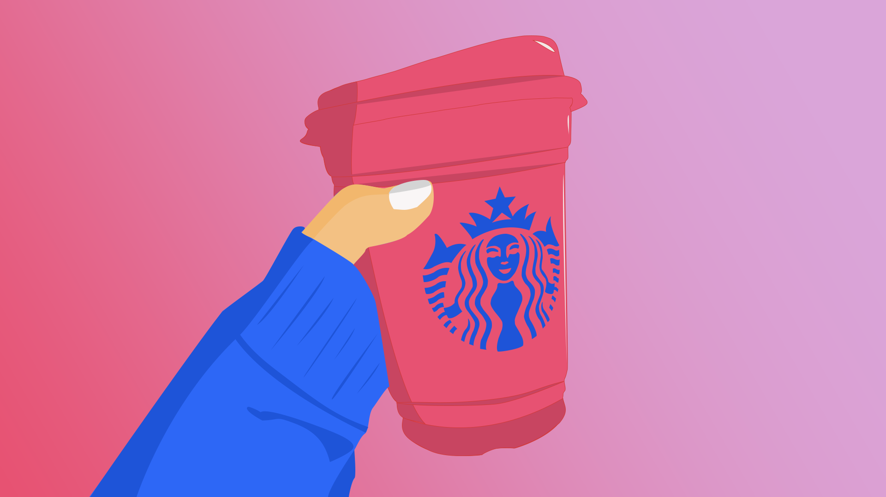

Projets Scolaires
Découvrez les projets que j'ai réalisés lors de mes études en Techniques d'intégration multimédia au Collège Montmorency. Ces projets reflètent mes compétences en design graphique, développement web et créativité.

TERMINAL
Projet d’installation interactive réalisé en équipe de 5 personnes dans le cadre du collège. TERMINAL est une expérience multijoueur pouvant accueillir jusqu’à 6 joueurs, où chaque participant incarne un opérateur devant restaurer un ancien réseau informatique piraté. Le jeu repose sur la communication, la coordination et la stratégie, puisque les déplacements des joueurs créent des obstacles pour les autres. Dans ce projet, la création des visuels a été réalisée par une équipe de 2 personnes, dont moi-même. Nous avons développé l’univers graphique et les éléments visuels du jeu afin de renforcer l’immersion et la cohérence de l’expérience. Au fil de la progression, les niveaux deviennent plus complexes avec l’ajout de boutons interactifs, de passages à débloquer et d’obstacles mobiles, obligeant les joueurs à collaborer étroitement pour réussir.
Outils utilisés : Adobe Illustrator

PROJET PORTRAIT
Projet de création d’un portrait vectoriel consistant à se représenter soi-même à l’aide d’outils numériques. L’objectif était de transformer une photo en illustration vectorielle tout en simplifiant les formes et en mettant l’accent sur les traits caractéristiques du visage et du style personnel. Dans ce projet, j’ai réalisé la vectorisation de mon propre portrait afin de développer mes compétences en illustration numérique et en maîtrise des formes, des couleurs et des proportions.
Outils utilisés : Adobe Illustrator

GÉNÉRIQUE DE FILM
Projet de création d’un générique de film fictif réalisé en style vectoriel. L’objectif était d’imaginer une identité visuelle complète et de concevoir une séquence d’introduction dynamique à l’aide de formes simples, de typographies et d’une composition graphique cohérente. J’ai développé un univers visuel original en mettant l’accent sur le rythme, la hiérarchie de l’information et l’impact visuel, tout en explorant les possibilités de l’animation et du design vectoriel.
Outils utilisés : Adobe Illustrator
DINO EN VILLE
Projet inspiré du jeu Dino Chrome, recréé dans un environnement 3D en réalité virtuelle avec casque VR. Dans le cadre de ce projet, j’ai été responsable de la création du logo, en développant une identité visuelle cohérente avec l’univers du jeu. L’objectif était de concevoir un logo simple, reconnaissable et impactant, capable de représenter l’ambiance ludique et immersive du concept.
Outils utilisés : Adobe Illustrator